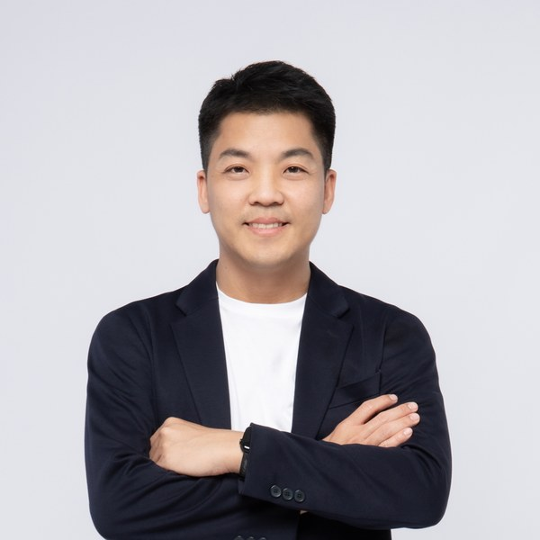

Software engineering lab · Chulalongkorn University
Reading, writing, and evolving software.
CUSE — Code Understanding, Synthesis, and Evolution
We study how software is comprehended, how machines can help generate it, and how systems and their ecosystems change over time — combining empirical software engineering with the practical study of AI for code.
Research
Our work follows code from the moment it is read to the moment it changes. Each thread stands on its own, and together they trace how software lives.
Understanding
How code is comprehended and reused — code similarity and clone search (Siamese), and frameworks for measuring coding proficiency in Python and JavaScript (pycefr, jscefr).
Synthesis
Using language models to help generate code, and testing them rigorously — metamorphic testing of LLMs, efficiency under quantization, and where these tools can be trusted.
Evolution
How software and its practice change over time — engineering AI-enabled and data-science systems, and working with Thai software companies to raise development practice.
People

Dr. Chaiyong Ragkhitwetsagul
Lab director · Assistant Professor
Ph.D. in Software Engineering from University College London, where he was part of the CREST centre. Master's from Carnegie Mellon University; bachelor's in Computer Engineering from Kasetsart University. Works on code similarity and clone detection, coding proficiency, and the robustness of language models for code, with papers in TSE, EMSE, JSS, ASE, MSR, and ICSME. Previously at the Faculty of ICT, Mahidol University, where he co-founded the SERU research group; now building CUSE at the Department of Computer Engineering, Faculty of Engineering, Chulalongkorn University. Hosts SE Corner, a weekly software engineering podcast in Thai.
Students & collaborators. CUSE is growing. Graduate and undergraduate members work across all three threads — see Join the lab.
Publications
A selection across the three threads. The full record is on the CV and Google Scholar.
-
JSSJournal of Systems and Software, 2026
-
ASEAutomated Software Engineering, 2025
-
NLDBNatural Language & Information Systems, 2025
-
ICSMEInt. Conf. on Software Maintenance and Evolution, 2024
-
TSEIEEE Transactions on Software Engineering, 2019
-
EMSEEmpirical Software Engineering, 2019
News
- Oct 2026CUSE is established at the Faculty of Engineering, Chulalongkorn University.
- 2026Now recruiting graduate and undergraduate students across all three research threads.
Join
We welcome curious students who want to do careful, empirical software engineering research — whether that means measuring how code is understood, stress-testing models that write code, or tracing how systems evolve. Prior research experience is welcome but not required; genuine curiosity is.
If you are a prospective master's or undergraduate student at Chulalongkorn, or a potential collaborator, send a short note about what you would like to work on, along with your CV.
Get in touch